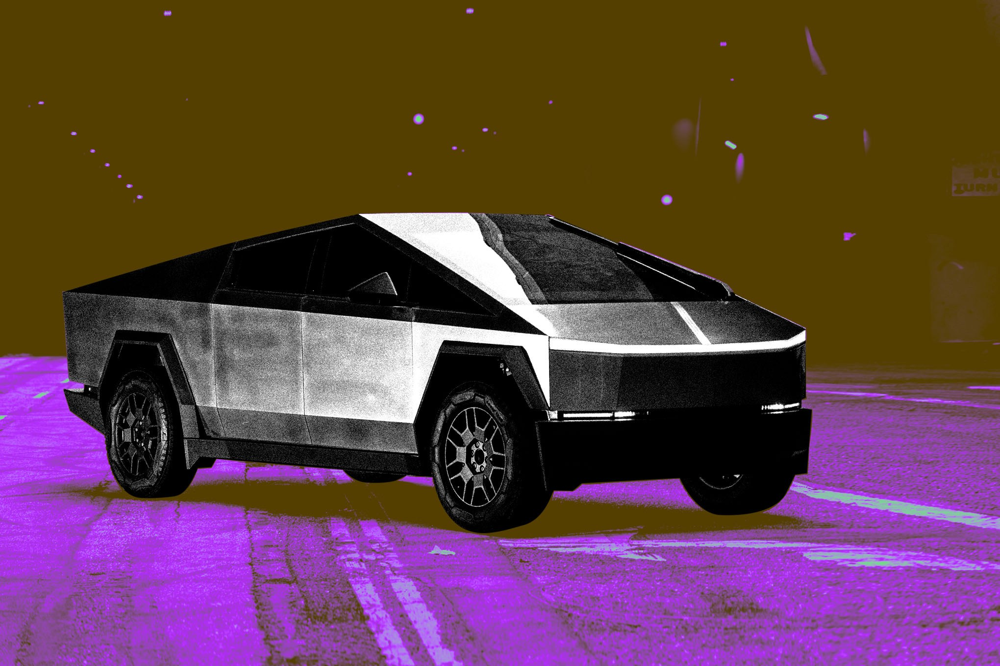

Cybertruck выходил с конвейера ровно три года: Маск анонсировал прекращение производства в посте на X. Амбиции были куда скромнее итога? Наоборот — в 2023-м обещали 250 тысяч пикапов в год с 2025-го. Реальность: по оценке Cox Automotive, с 2023 года в США продано всего около 70 тысяч машин — при проектной мощности завода более 125 тысяч в год. По кварталам динамика тоже грустная: 3519 проданных в первом квартале 2026-го, 3744 во втором, 4323 в третьем.
Компания не раскрывает продажи Cybertruck отдельно — он прячется в категории «прочие модели» вместе с Model S, Model X и Semi. В третьем квартале 2026-го Tesla отгрузила 8295 таких машин. Поскольку выпуск Model S и Model X остановили ещё в апреле, портал Electrek оценивает квартальные продажи Cybertruck в 7–8 тысяч штук — примерно 30 тысяч в год. Это порядка четверти того, что завод в Остине мог бы выпускать.
Остин — единственное место, где собирают Cybertruck, и единственный объект с нужной оснасткой: переносить производство куда-то под нерентабельную модель никто не будет. Освободившиеся линии Tesla отдаст Cybercab — двухместным роботакси без руля и педалей, на которых Маск делает главную ставку после того, как пообещал «прекрасное соглашение» вокруг автономного транспорта. Ранее компания уже запускала серийное производство гуманоидов Optimus во Фримонте — завод в Техасе становится площадкой для робототехники вместо пикапов.
Cybertruck стал самым дорогим экспериментом Tesla в дизайне: нержавеющий кузов, угловатая форма и скандальная репутация не превратились в спрос. Для рынка робототехники важно другое — крупнейший автопроизводитель электромобилей США официально перекраивает завод под автономные машины и роботов, и это громче любых презентаций.